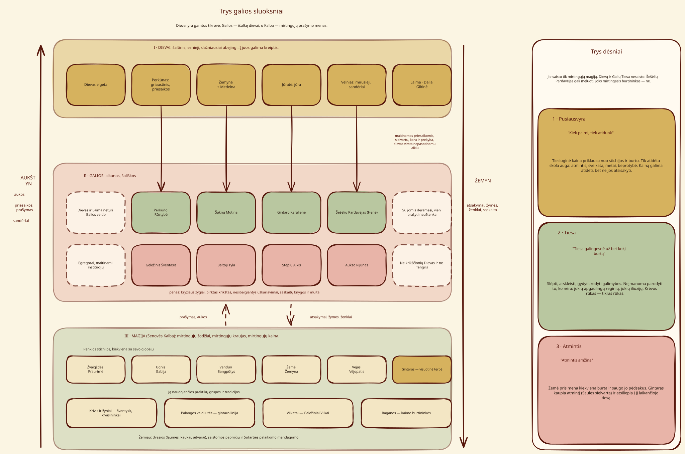
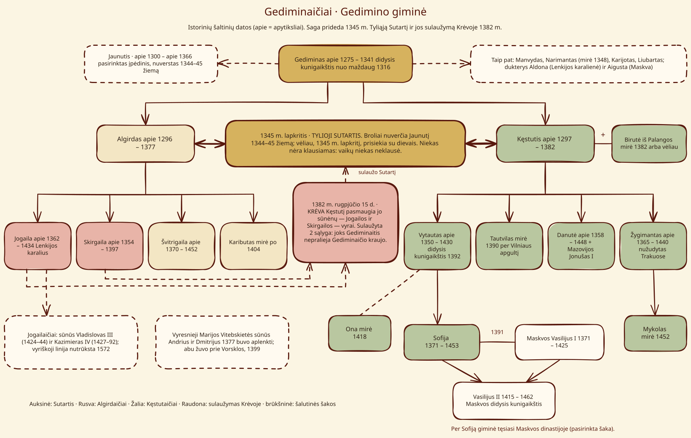
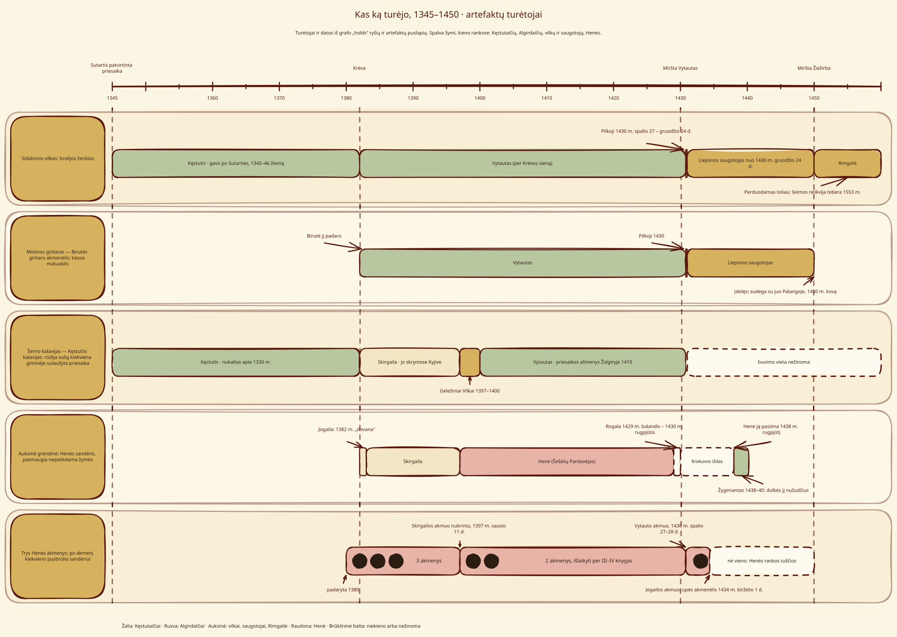

Žemėlapiai ir diagramos¶
Sagos sandaros diagramos.
Trys galios sluoksniai¶


Trys galios sluoksniai¶
Dievai yra gamtos tikrovė, Galios — išalkę dievai, o Kalba — mirtingųjų prašymo menas. Aukos kyla; atsakymai, žymės ir kaina leidžiasi žemyn. Trys dėsniai saisto tik mirtinguosius. Žr. Kosmologiją ir Šaknų Motiną.
Gedimino giminė¶


Gediminaičių genealoginis medis¶
Istorinių šaltinių datos: 1344–45 žiemos perversmas atskirtas nuo sagos 1345 m. lapkričio Sutarties, o jos sulaužymas Krėvoje 1382 m. pažymėtas medyje. Žr. Gediminaičius.
Tylioji Sutartis¶

Tylioji Sutartis: šalys, sąlygos ir Atsaistymas¶
Trys šalys ir ketvirtoji, kurios niekas neklausė; trys sąlygos, sekamos knyga po knygos; ir Atsaistymas, besitęsiantis nuo Krėvos iki paskutinės liepsnos. Žr. Tyliąją Sutartį.
Artefaktų turėtojai¶


Artefaktų turėtojų chronologija¶
Penki artefaktai nuo 1345 iki 1450; sidabrinis vilkas perduodamas toliau kaip šeimos relikvija 1553 m. Žr. Sidabrinį vilką.
Visa serija vienoje ašyje¶

Šešios knygos vienoje 1341–1450 laiko juostoje, pažymėtas 1553 m. epilogas¶
Šešios knygos istorinių šaltinių fone: pirmiausia VI, paskui I–V, su pasakojimą vedančiais įvykiais. Žr. visą Chronologiją.
Magija vienu žvilgsniu¶

Magija vienu žvilgsniu¶
Trys sluoksniai, praktikų grupės, penkios stichijos, tiesioginės stichijų kainos ir atskiros atidėtos skolos viename puslapyje. Žr. Magijos žiniją.